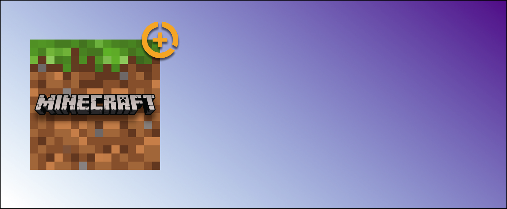
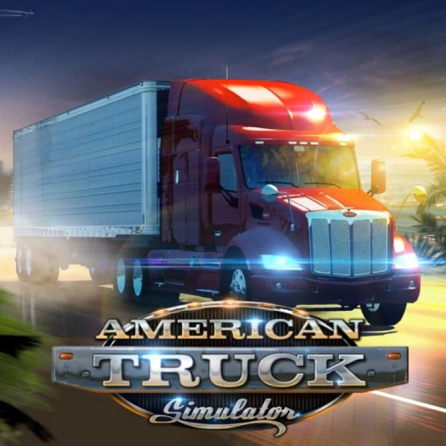
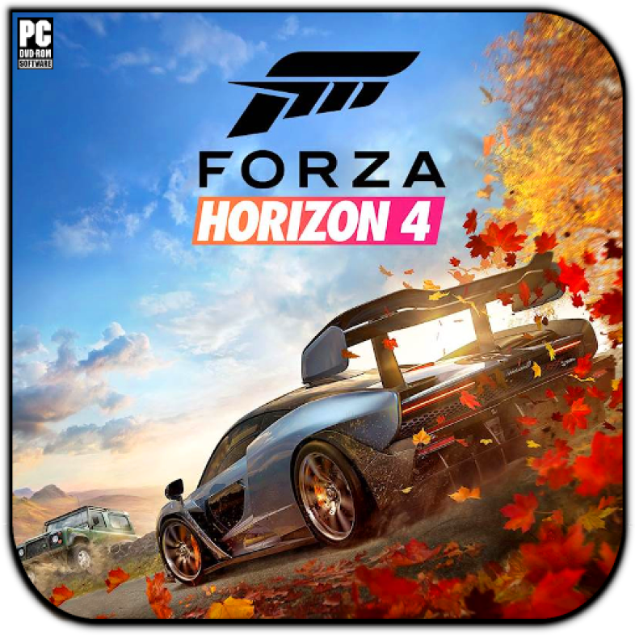
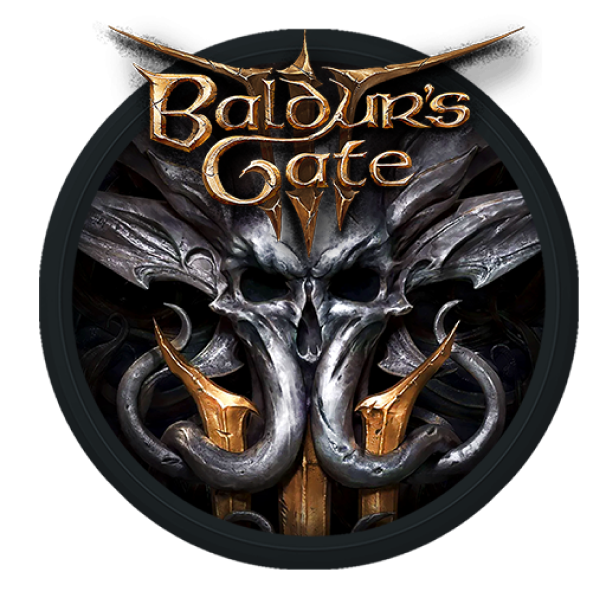
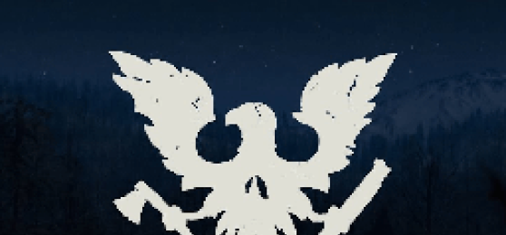

Satisfactory
Satisfactory is a first-person open-world factory building game with
a dash of exploration and combat. Play alone or with friends, explore
an alien planet, create multi-story factories, and enter conveyor belt
heaven!

Minecraft
Minecraft is a sandbox game developed by Mojang Studios and
originally released in 2009. The game was created by Markus
"Notch" Persson in the Java programming language.

ATS
Experience legendary American trucks and deliver various cargoes
across sunny California, sandy Nevada, and the Grand Canyon State
of Arizona. American Truck Simulator takes you on a journey
through the breathtaking landscapes and widely recognized
landmarks around the States.

FORZA 4
Dynamic seasons change everything at the world’s greatest
automotive festival. Go it alone or team up with others to explore
beautiful and historic Britain in a shared open world.

Baldur's Gate 3
Baldur’s Gate 3 is a story-rich, party-based RPG set in the universe of Dungeons & Dragons, where your choices shape a tale of fellowship and betrayal, survival and sacrifice, and the lure of absolute power.

SOD
The dead have risen and civilization has fallen. Now it's up
to you to gather survivors, scavenge for resources and build a
community in a post-apocalyptic world – a world where you
define what it means to survive in this ultimate zombie
survival simulation.

Valheim

Satisfactory
Satisfactory is a first-person open-world factory building
game with a dash of exploration and combat. Play alone or with
friends, explore an alien planet, create multi-story
factories, and enter conveyor belt heaven!